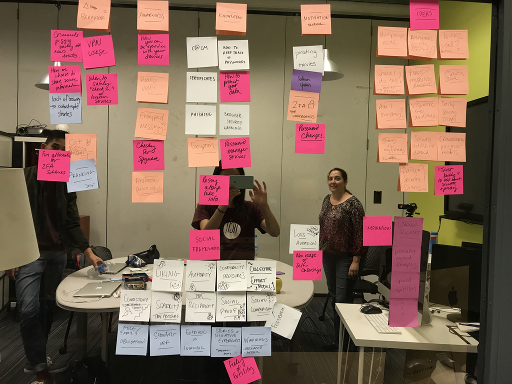
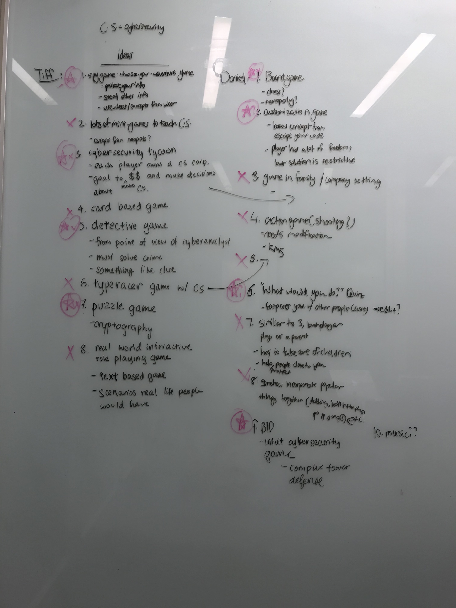

SOCIAL CYBERSECURITY GAME
sept–dec 2017 (THIS PROJECT IS STILL IN PROGRESS.)
overview—
persuasive design, education, game design, cybersecurity
teammates—
Daniel Liu
problem space—
According to surveys conducted by Pew Research Center, “many Americans fail to follow cybersecurity best practices in their own digital lives.” Over 64% of adults have experienced a major data breach. However, in the survey conducted, 69% of them do not worry about how secure their passwords are. Cybersecurity is becoming an increasing concern as more and more our lives are put online. The expanding market of IOT products and services increases the need for better cybersecurity. The vast majority of the population is largely uneducated and unmotivated to make changes to their security and privacy practices such as making more complex passwords, adding more features of authentication, and connecting to secure wi-fi networks. Knowing all of this, how can we build games to educate and change people’s behaviors online to be more secure?
challenges—
- Repeated engagement
- Positive transfer to real life behavior
research—
Before beginning, we conducted research in the problemspace that we were working in. This included looking up pre-existing papers about social cybersecurity and cybersecurity practices. We also spent much of our time playing games (both educational and non-educational games), pulling some of our inspiration and understanding from these games. In the process of playing these games, we were able to see what techniques and strategies were effective to engaging players and affecting player behavior.
stakeholders—
- General population: Specifically people who do not necessarily work in cybersecurity/tech related fields. We want to educate the average person about practices to keep themselves and their data safe on the web.
- Employers: If employees generally use better cybersecurity practices, then the company is less likely to suffer data breaches and keep data more secure. (You’re only as strong as your weakest link!)
- Companies: Corporations that a user may use such as banking, social media, etc.
ideation—
At the start of our ideation process, we did a sticky note exercise, writing all the different concepts and ideas we had related to social cybersecurity.

To help generate ideas, we went through many sessions of brainstorming and game research. One of the exercises we did encourage breath of exploration was the Crazy 8s exercise.

paper prototyping—
We prototyped one of the ideas we had: a role-playing fantasy game with cybersecurity elements, inspired by the anime, Sword Art Online.

However, given the difficulty of information transfer and the limited social influence that the game had, we decided to go back to the drawing board and further brainstorm.
status—
We have decided on one idea and working on fleshing those ideas out with paper prototypes and user testing. After that, we hope to use Unity to code the game.